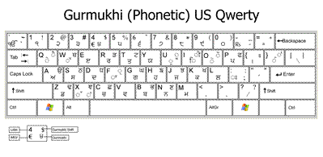
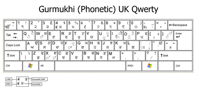

Phonetic Keyboard
The Punjabi Computing Resource Centre has extensively designed and tested a new phonetic keyboard layout in conjunction with the Punjabi Linux Team. This layout combines the advantages of of both Inscript and standard font based layouts while removing their limitations.
Features
- A largely phonetic layout without combined keys such as Kanna + Bindi.
- Where appropriate, statistically higher used characters are in the main key state. Lesser used characters are in the shift state.
- Dead keys to remove the need to use pre-composed independent vowels. For example:
- Enter a space after a dead key to get the standalone form of a character (Ura, Aira or Iri).
- Removal of all Pairin Bindi characters – a single Pairin Bindi (Nukta) key is used instead.
- Standard Latin punctuation in addition to Danda and Double Danda.
- Unicode rendering engines automatically position vowel signs (matras) and other symbols correctly. There is no need for special versions of ਨੂੰ and other words.
- Latin numbers (0-9) are available via the number pad without changing layouts.
- Pairin characters such as Pairin Rara and Pairin Haha are written using the Halant key (F) followed by the full form of the character. For example, Pairin Rara is written '੍' + ਰ.
Layout
Based on US Qwerty

Based on UK Qwerty

Installation
Extract the ZIP file below and run the ".msi" installer. Once the installer has completed, make sure the Gurmukhi keyboard is selected for the Punjabi language.
Download
There are keyboard layouts based on both UK and US Qwerty keyboards. They differ only in the positioning of Latin punctuation. Select the appropriate keyboard:
Phonetic Keyboard (US)
Zip File
Phonetic Keyboard (UK)
Zip File
|
{kind=link}
{kind=link}